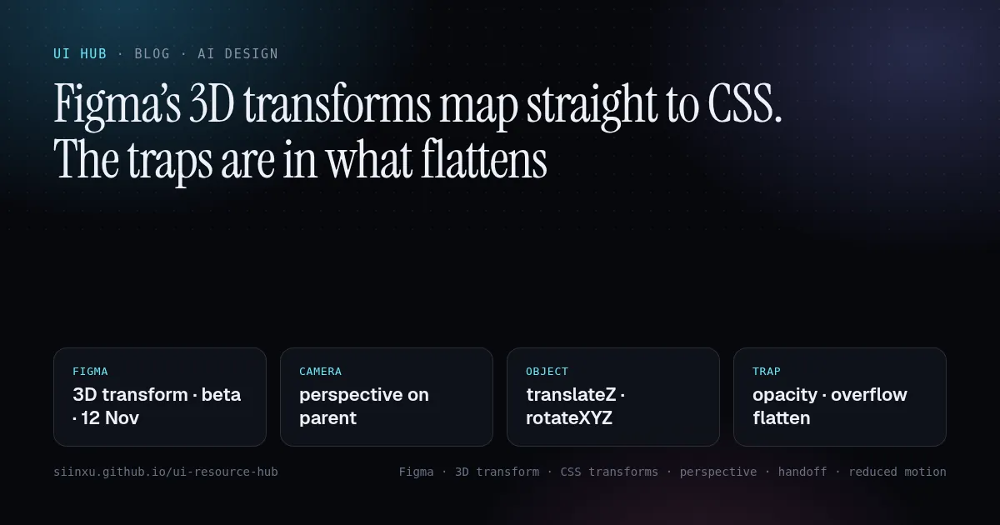
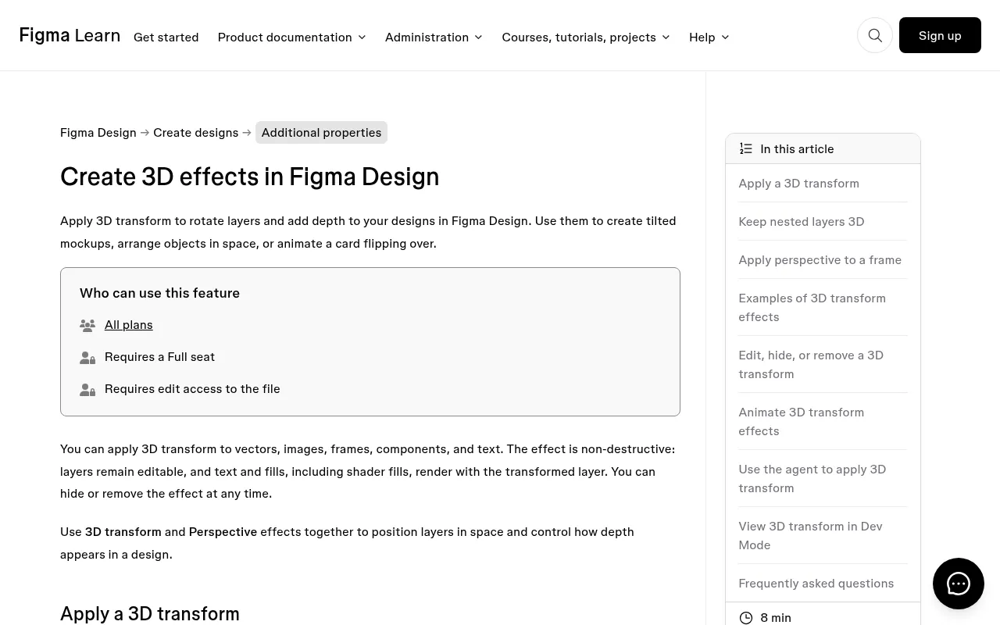
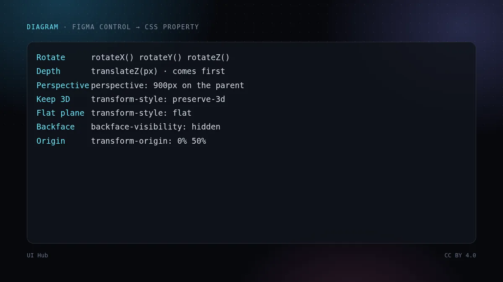
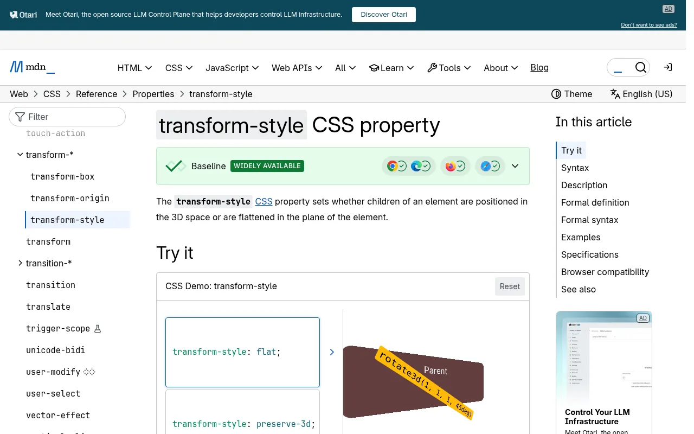
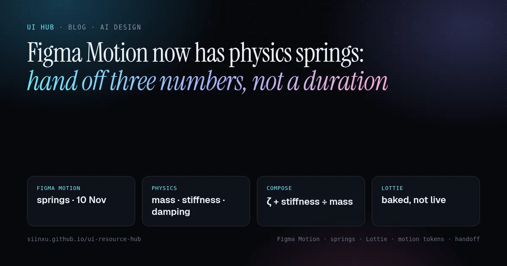
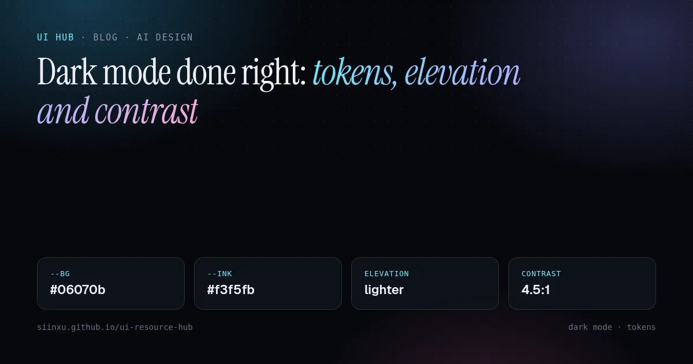

Figma’s 3D transforms map straight to CSS. The traps are in what flattensFigmaの3D変換はそのままCSSになる。落とし穴は「平面化」にあるFigma 3D 변환은 CSS로 그대로 옮겨진다. 함정은 ‘평면화’에 있다3D transform Figma dipetakan terus ke CSS. Perangkapnya ada pada apa yang menjadi rata3D transform của Figma chuyển thẳng sang CSS. Cái bẫy nằm ở những chỗ bị làm phẳngLes transformations 3D de Figma passent tel quel en CSS. Le piège, c’est ce qui s’aplatitLas transformaciones 3D de Figma pasan directo a CSS. La trampa está en lo que se aplanaFigmas 3D-Transformationen landen direkt in CSS. Die Falle liegt in dem, was flach wird
On 12 November 2026 Figma opened its 3D transform and Perspective effects in beta, with Dev Mode copying them as CSS and the Figma MCP passing them to coding agents. How each control maps to a CSS property, why opacity, clipping and effects quietly flatten a 3D scene in both Figma and the browser, where depth helps an interface and where it hurts, plus a handoff checklist and a prompt for your coding agent.2026年11月12日、Figmaは3D変換とパースペクティブ効果をベータ公開した。Dev ModeはそれをCSSとしてコピーでき、Figma MCPはコーディングエージェントに渡せる。各コントロールとCSSプロパティの対応、不透明度・クリップ・エフェクトがFigmaでもブラウザでも3Dシーンを黙って平面化する理由、奥行きがUIに効く場面と害になる場面、ハンドオフ用チェックリストとエージェント向けプロンプト。2026년 11월 12일 Figma가 3D 변환과 원근 효과를 베타로 공개했다. Dev Mode는 이를 CSS로 복사하고 Figma MCP는 코딩 에이전트에 넘긴다. 각 컨트롤이 어떤 CSS 속성에 대응하는지, 불투명도·클리핑·이펙트가 Figma와 브라우저 모두에서 3D 장면을 조용히 평면화하는 이유, 깊이가 인터페이스에 도움이 되는 곳과 해가 되는 곳, 그리고 핸드오프 체크리스트와 코딩 에이전트용 프롬프트.Pada 12 November 2026 Figma membuka kesan 3D transform dan Perspective dalam beta, dengan Dev Mode menyalinnya sebagai CSS dan Figma MCP menghantarnya kepada ejen pengekodan. Bagaimana setiap kawalan dipetakan ke sifat CSS, mengapa kelegapan, keratan dan kesan diam-diam meratakan adegan 3D dalam Figma dan pelayar, bila kedalaman membantu antara muka dan bila ia merosakkan, serta senarai semak serahan dan prompt untuk ejen anda.Ngày 12/11/2026 Figma mở bản beta cho hiệu ứng 3D transform và Perspective; Dev Mode sao chép chúng thành CSS và Figma MCP chuyển chúng cho agent lập trình. Mỗi điều khiển ứng với thuộc tính CSS nào, vì sao opacity, cắt xén và hiệu ứng lặng lẽ làm phẳng cảnh 3D cả trong Figma lẫn trình duyệt, khi nào chiều sâu giúp giao diện và khi nào gây hại, kèm checklist bàn giao và prompt cho agent.Le 12 novembre 2026, Figma a ouvert en bêta ses effets 3D transform et Perspective ; Dev Mode les copie en CSS et le MCP Figma les transmet aux agents de code. La correspondance de chaque réglage avec une propriété CSS, pourquoi l’opacité, le rognage et les effets aplatissent discrètement une scène 3D dans Figma comme dans le navigateur, quand la profondeur aide une interface et quand elle nuit, plus une checklist de passation et un prompt pour votre agent.El 12 de noviembre de 2026 Figma abrió en beta sus efectos 3D transform y Perspective; Dev Mode los copia como CSS y el MCP de Figma los pasa a los agentes de código. Cómo se corresponde cada control con una propiedad CSS, por qué la opacidad, el recorte y los efectos aplanan en silencio una escena 3D tanto en Figma como en el navegador, cuándo la profundidad ayuda a una interfaz y cuándo estorba, más una checklist de entrega y un prompt para tu agente.Am 12. November 2026 hat Figma die Effekte 3D Transform und Perspective als Beta geöffnet; Dev Mode kopiert sie als CSS, und der Figma-MCP reicht sie an Coding-Agents weiter. Wie jede Einstellung einer CSS-Eigenschaft entspricht, warum Deckkraft, Beschneidung und Effekte eine 3D-Szene in Figma wie im Browser stillschweigend flach machen, wann Tiefe einer Oberfläche hilft und wann sie schadet, dazu eine Übergabe-Checkliste und ein Prompt für deinen Agent.

本文は英語で表示しています。
본문은 영어로 표시됩니다.
Kandungan dipaparkan dalam bahasa Inggeris.
Nội dung hiển thị bằng tiếng Anh.
Le corps de l’article est en anglais.
El cuerpo del artículo está en inglés.
Der Beitragstext ist auf Englisch.
On 12 November 2026 Figma moved two new effects into open beta for Full seats: 3D transform, which rotates a layer on the X, Y and Z axes and pushes it along Z with a Depth value, and Perspective, which sets the camera distance for everything inside a frame. The Figma agent can compose 3D scenes, Figma Motion can keyframe them, and the release notes pitch the feature as “ship directly to code”: Dev Mode copies the CSS, and coding agents can read and create 3D designs through the Figma MCP server. The same day, Framer’s agent learned to generate images and shaders. Depth and texture are becoming ordinary materials in design tools, which means they will start showing up in the code your agents write.

The good news is that this is the most literal design-to-code mapping Figma has shipped. The less obvious news is that the hard part is not the angles. It is the rules for when a 3D scene silently collapses into a flat picture, and those rules are almost the same on the canvas and in the browser.
What shipped
- Two effects, applied like any other. 3D transform works on vectors, images, frames, components and text, and stays non-destructive: the content remains editable, and text and fills, including shader fills, render with the transformed layer.
- Camera vs object. Figma’s help article puts it neatly: Perspective is moving the camera, Depth is moving the object. Perspective goes on the parent frame so its children share one viewpoint.
- A shared space is opt-in. “Keep nested layers 3D” lets children intersect and sort by depth; “Turn into flat plane” ends the 3D space at that frame. There are also controls for the origin point and for showing or hiding the backface.
- Motion and agents. Rotate X, Rotate Y, Depth and perspective can be keyframed, and the agent accepts prompts like “arrange these layers as the faces of a cube and animate it rotating”.
- A plugin API in beta. Plugin update 142 adds
transform3d,transformOriginandscene3d, plus Motion keyframe fields for them. Figma’s Brand Studio wrote that the agent even built them a generative plugin to scatter cards into grids, rings and helices.

The mapping, control by control
Figma’s docs spell out the correspondence, and the plugin API is stricter still: an editable 3D transform is translateZ() rotateX() rotateY() rotateZ(), in that order. Order matters in CSS because each function rotates the coordinate system for the next one, so keep the order when you hand-edit.
- Rotation X / Y / Z →
rotateX(),rotateY(),rotateZ()intransform. - Depth →
translateZ(), in pixels. - Perspective on a frame → the
perspectiveproperty on the parent. Not theperspective()function on each child, which gives every card its own vanishing point. - Keep nested layers 3D / Turn into flat plane →
transform-style: preserve-3d/flat. This property is not inherited, so every intermediate wrapper needs it too. - Backface →
backface-visibility. Origin point →transform-origin.
Our take: design the flattening, don’t discover it
In Figma, turning on “Keep nested layers 3D” disables the frame’s opacity and hides its blend modes, shaders, other effects, clip content, fills and strokes. That looks like a tool limitation. It is actually the browser’s rule showing through. MDN lists the “grouping” values that force transform-style to behave as flat even when you wrote preserve-3d: overflow other than visible or clip, opacity below 1, any filter, clip-path, isolation: isolate, masks, mix-blend-mode and paint containment.
That is exactly where AI-generated 3D code breaks. An agent wraps the scene in a card with overflow: hidden and rounded corners, or fades it in with opacity, or adds a glassy backdrop blur, and the cube becomes a flat sticker. Nothing errors. It just looks wrong, and the screenshot review often misses it because the first frame of the animation looks fine.
Figma’s plugin docs describe the fix, and it works in CSS unchanged: split the scene into two wrappers. The outer one is flat and carries the perspective, the clipping, the radius, the opacity and any effects. The inner one carries preserve-3d and nothing that groups. If designers build that structure in the file, the CSS that Dev Mode or the MCP produces will already be correct.
Where depth earns its place
Good uses are the ones Figma lists: a tilted device mockup, a fan of cards, a flip between two faces, a hero composition. Our rule of thumb is to keep readable text within small angles and to never put form fields, menus or body copy on a rotated plane. Rotated text is harder to read, and keyboard focus rings on a tilted element are easy to lose.
Motion is the bigger risk. Large rotations, zooms through Z and continuous spins are the kind of movement that can make people with vestibular disorders unwell. WCAG’s “Animation from Interactions” criterion asks for a way to turn motion triggered by interaction off; in CSS that means a prefers-reduced-motion branch that keeps the static 3D pose, or swaps the flip for a cross-fade. Animate only transform and opacity on the outer wrapper, and keep the number of live 3D layers small on mobile.
Checklist: hand off a 3D layer
- Perspective on the parent. One
perspectiveper scene, on the flat outer wrapper. Note the value in the spec; small numbers exaggerate distortion. - Keep the function order.
translateZ rotateX rotateY rotateZ, as Dev Mode copies it. - Two wrappers. Outer: perspective, radius,
overflow, opacity, filters. Inner:transform-style: preserve-3donly. - Search the diff for groupers.
overflow: hidden,opacity,filter,backdrop-filter,clip-path,isolation,mix-blend-mode,containon any element between the scene root and its faces. - Backfaces on purpose. For a flip card, two layers with
backface-visibility: hidden, the back pre-rotated 180°. - Text stays readable. Body text, inputs and menus stay flat; only decorative or headline layers rotate.
- Reduced motion. A
prefers-reduced-motion: reducebranch: static pose or a fade, no spinning. - Fallback pose. The flat, unrotated layout must still make sense if the 3D is removed.
- Check both themes. Shading and shadows that sell depth on white often vanish on near-black; check light and dark.
/* Flip card: flat outer wrapper, 3D inner scene */
.stage { perspective: 900px; border-radius: 16px; overflow: hidden; }
.scene { transform-style: preserve-3d; transition: transform .6s; }
.stage:hover .scene { transform: rotateY(180deg); }
.face { position: absolute; inset: 0; backface-visibility: hidden; }
.back { transform: rotateY(180deg); }
@media (prefers-reduced-motion: reduce) {
.scene { transition: none; }
.stage:hover .scene { transform: none; } /* show the back with a fade instead */
}# Paste this to your coding agent (with the Figma MCP connected)
Implement the selected Figma frame, including its 3D transform and Perspective effects.
- Copy transforms as translateZ() rotateX() rotateY() rotateZ() in that order.
- Put perspective on ONE flat outer wrapper per scene; it also owns radius,
overflow, opacity, filters and shadows.
- Put transform-style: preserve-3d on the inner scene and on every wrapper
between it and the faces. No overflow/opacity/filter/clip-path/isolation/
mix-blend-mode/contain on those elements.
- Text inputs, menus and body copy stay unrotated.
- Add a prefers-reduced-motion branch (static pose or cross-fade).
Report: each 3D element, its CSS, and any property you removed because it flattened the scene.
What we would not do yet
The feature and its plugin API are in beta, and Figma notes that the API may change; an imported FREEFORM transform can be read but not written. Don’t build a design-system token pipeline on the exact Dev Mode output format yet. Treat the CSS as a reference for angles and depth, and keep the structural rule, flat outside and 3D inside, as the part you standardise.
Related on UI Hub: handing off Figma Motion springs, shipping Figma shaders, and motion that feels right.
On 12 November 2026 Figma moved two new effects into open beta for Full seats: 3D transform, which rotates a layer on the X, Y and Z axes and pushes it along Z with a Depth value, and Perspective, which sets the camera distance for everything inside a frame. The Figma agent can compose 3D scenes, Figma Motion can keyframe them, and the release notes pitch the feature as “ship directly to code”: Dev Mode copies the CSS, and coding agents can read and create 3D designs through the Figma MCP server. The same day, Framer’s agent learned to generate images and shaders. Depth and texture are becoming ordinary materials in design tools, which means they will start showing up in the code your agents write.
The good news is that this is the most literal design-to-code mapping Figma has shipped. The less obvious news is that the hard part is not the angles. It is the rules for when a 3D scene silently collapses into a flat picture, and those rules are almost the same on the canvas and in the browser.
What shipped
- Two effects, applied like any other. 3D transform works on vectors, images, frames, components and text, and stays non-destructive: the content remains editable, and text and fills, including shader fills, render with the transformed layer.
- Camera vs object. Figma’s help article puts it neatly: Perspective is moving the camera, Depth is moving the object. Perspective goes on the parent frame so its children share one viewpoint.
- A shared space is opt-in. “Keep nested layers 3D” lets children intersect and sort by depth; “Turn into flat plane” ends the 3D space at that frame. There are also controls for the origin point and for showing or hiding the backface.
- Motion and agents. Rotate X, Rotate Y, Depth and perspective can be keyframed, and the agent accepts prompts like “arrange these layers as the faces of a cube and animate it rotating”.
- A plugin API in beta. Plugin update 142 adds
transform3d,transformOriginandscene3d, plus Motion keyframe fields for them. Figma’s Brand Studio wrote that the agent even built them a generative plugin to scatter cards into grids, rings and helices.
The mapping, control by control
Figma’s docs spell out the correspondence, and the plugin API is stricter still: an editable 3D transform is translateZ() rotateX() rotateY() rotateZ(), in that order. Order matters in CSS because each function rotates the coordinate system for the next one, so keep the order when you hand-edit.
- Rotation X / Y / Z →
rotateX(),rotateY(),rotateZ()intransform. - Depth →
translateZ(), in pixels. - Perspective on a frame → the
perspectiveproperty on the parent. Not theperspective()function on each child, which gives every card its own vanishing point. - Keep nested layers 3D / Turn into flat plane →
transform-style: preserve-3d/flat. This property is not inherited, so every intermediate wrapper needs it too. - Backface →
backface-visibility. Origin point →transform-origin.
Our take: design the flattening, don’t discover it
In Figma, turning on “Keep nested layers 3D” disables the frame’s opacity and hides its blend modes, shaders, other effects, clip content, fills and strokes. That looks like a tool limitation. It is actually the browser’s rule showing through. MDN lists the “grouping” values that force transform-style to behave as flat even when you wrote preserve-3d: overflow other than visible or clip, opacity below 1, any filter, clip-path, isolation: isolate, masks, mix-blend-mode and paint containment.
That is exactly where AI-generated 3D code breaks. An agent wraps the scene in a card with overflow: hidden and rounded corners, or fades it in with opacity, or adds a glassy backdrop blur, and the cube becomes a flat sticker. Nothing errors. It just looks wrong, and the screenshot review often misses it because the first frame of the animation looks fine.
Figma’s plugin docs describe the fix, and it works in CSS unchanged: split the scene into two wrappers. The outer one is flat and carries the perspective, the clipping, the radius, the opacity and any effects. The inner one carries preserve-3d and nothing that groups. If designers build that structure in the file, the CSS that Dev Mode or the MCP produces will already be correct.
Where depth earns its place
Good uses are the ones Figma lists: a tilted device mockup, a fan of cards, a flip between two faces, a hero composition. Our rule of thumb is to keep readable text within small angles and to never put form fields, menus or body copy on a rotated plane. Rotated text is harder to read, and keyboard focus rings on a tilted element are easy to lose.
Motion is the bigger risk. Large rotations, zooms through Z and continuous spins are the kind of movement that can make people with vestibular disorders unwell. WCAG’s “Animation from Interactions” criterion asks for a way to turn motion triggered by interaction off; in CSS that means a prefers-reduced-motion branch that keeps the static 3D pose, or swaps the flip for a cross-fade. Animate only transform and opacity on the outer wrapper, and keep the number of live 3D layers small on mobile.
Checklist: hand off a 3D layer
- Perspective on the parent. One
perspectiveper scene, on the flat outer wrapper. Note the value in the spec; small numbers exaggerate distortion. - Keep the function order.
translateZ rotateX rotateY rotateZ, as Dev Mode copies it. - Two wrappers. Outer: perspective, radius,
overflow, opacity, filters. Inner:transform-style: preserve-3donly. - Search the diff for groupers.
overflow: hidden,opacity,filter,backdrop-filter,clip-path,isolation,mix-blend-mode,containon any element between the scene root and its faces. - Backfaces on purpose. For a flip card, two layers with
backface-visibility: hidden, the back pre-rotated 180°. - Text stays readable. Body text, inputs and menus stay flat; only decorative or headline layers rotate.
- Reduced motion. A
prefers-reduced-motion: reducebranch: static pose or a fade, no spinning. - Fallback pose. The flat, unrotated layout must still make sense if the 3D is removed.
- Check both themes. Shading and shadows that sell depth on white often vanish on near-black; check light and dark.
/* Flip card: flat outer wrapper, 3D inner scene */
.stage { perspective: 900px; border-radius: 16px; overflow: hidden; }
.scene { transform-style: preserve-3d; transition: transform .6s; }
.stage:hover .scene { transform: rotateY(180deg); }
.face { position: absolute; inset: 0; backface-visibility: hidden; }
.back { transform: rotateY(180deg); }
@media (prefers-reduced-motion: reduce) {
.scene { transition: none; }
.stage:hover .scene { transform: none; } /* show the back with a fade instead */
}# Paste this to your coding agent (with the Figma MCP connected)
Implement the selected Figma frame, including its 3D transform and Perspective effects.
- Copy transforms as translateZ() rotateX() rotateY() rotateZ() in that order.
- Put perspective on ONE flat outer wrapper per scene; it also owns radius,
overflow, opacity, filters and shadows.
- Put transform-style: preserve-3d on the inner scene and on every wrapper
between it and the faces. No overflow/opacity/filter/clip-path/isolation/
mix-blend-mode/contain on those elements.
- Text inputs, menus and body copy stay unrotated.
- Add a prefers-reduced-motion branch (static pose or cross-fade).
Report: each 3D element, its CSS, and any property you removed because it flattened the scene.What we would not do yet
The feature and its plugin API are in beta, and Figma notes that the API may change; an imported FREEFORM transform can be read but not written. Don’t build a design-system token pipeline on the exact Dev Mode output format yet. Treat the CSS as a reference for angles and depth, and keep the structural rule, flat outside and 3D inside, as the part you standardise.
Related on UI Hub: handing off Figma Motion springs, shipping Figma shaders, and motion that feels right.
AI promptAIプロンプトAI 프롬프트Prompt AIPrompt cho AIPrompt IAPrompt de IAKI-Prompt
Paste this into Claude, Cursor, v0 or another assistant to apply this post to your own project. Replace the parts in angle brackets.Claude・Cursor・v0 などのAIアシスタントに貼り付けると、この記事の方法をあなたのプロジェクトに適用できます。山括弧の部分は自分の内容に置き換えてください。Claude, Cursor, v0 같은 AI 도우미에 붙여 넣으면 이 글의 방법을 내 프로젝트에 적용할 수 있습니다. 꺾쇠괄호 안은 내 내용으로 바꾸세요.Tampal ke Claude, Cursor, v0 atau pembantu lain untuk menggunakan kaedah artikel ini pada projek anda. Gantikan bahagian dalam kurungan sudut.Dán vào Claude, Cursor, v0 hoặc trợ lý khác để áp dụng bài này cho dự án của bạn. Thay phần trong dấu ngoặc nhọn bằng nội dung của bạn.Collez-le dans Claude, Cursor, v0 ou un autre assistant pour appliquer cet article à votre projet. Remplacez les parties entre chevrons.Pégalo en Claude, Cursor, v0 u otro asistente para aplicar este artículo a tu proyecto. Sustituye lo que está entre corchetes angulares.In Claude, Cursor, v0 oder einen anderen Assistenten einfügen, um diesen Beitrag auf dein Projekt anzuwenden. Teile in spitzen Klammern ersetzen.
You are a senior UI engineer. Apply the article “Figma’s 3D transforms map straight to CSS. The traps are in what flattens” (https://ui.incidental.site/blog/figma-3d-transforms-css-handoff/) to my project.
Key idea: On 12 November 2026 Figma opened its 3D transform and Perspective effects in beta, with Dev Mode copying them as CSS and the Figma MCP passing them to coding agents. How each control maps to a CSS property, why opacity, clipping and effects quietly flatten a 3D scene in both Figma and the browser, where depth helps an interface and where it hurts, plus a handoff checklist and a prompt for your coding agent.
Steps:
1. Read the article and turn its advice into a numbered checklist of concrete, checkable rules.
2. Audit <my page / component / repo> against that checklist; mark each rule PASS or FAIL with file and line.
3. Fix the FAIL items in small batches, using my existing tokens and components. Do not invent APIs; follow the official docs the article links to.
4. Finish with a short list of open questions and anything you could not verify.あなたはシニアUIエンジニアです。記事「Figmaの3D変換はそのままCSSになる。落とし穴は「平面化」にある」（https://ui.incidental.site/blog/figma-3d-transforms-css-handoff/）の方法を私のプロジェクトに適用してください。
要点：2026年11月12日、Figmaは3D変換とパースペクティブ効果をベータ公開した。Dev ModeはそれをCSSとしてコピーでき、Figma MCPはコーディングエージェントに渡せる。各コントロールとCSSプロパティの対応、不透明度・クリップ・エフェクトがFigmaでもブラウザでも3Dシーンを黙って平面化する理由、奥行きがUIに効く場面と害になる場面、ハンドオフ用チェックリストとエージェント向けプロンプト。
手順：
1. 記事を読み、助言を具体的で確認可能な番号付きチェックリストにする。
2. そのチェックリストで <私のページ / コンポーネント / リポジトリ> を監査し、各項目を合格／不合格で示し、ファイルと行番号を書く。
3. 不合格の項目を、既存のトークンとコンポーネントを使って少しずつ修正する。APIを捏造せず、記事がリンクする公式ドキュメントに従う。
4. 最後に未解決の質問と検証できなかった点を挙げる。당신은 시니어 UI 엔지니어입니다. 글 “Figma 3D 변환은 CSS로 그대로 옮겨진다. 함정은 ‘평면화’에 있다”(https://ui.incidental.site/blog/figma-3d-transforms-css-handoff/)의 방법을 내 프로젝트에 적용해 주세요.
핵심: 2026년 11월 12일 Figma가 3D 변환과 원근 효과를 베타로 공개했다. Dev Mode는 이를 CSS로 복사하고 Figma MCP는 코딩 에이전트에 넘긴다. 각 컨트롤이 어떤 CSS 속성에 대응하는지, 불투명도·클리핑·이펙트가 Figma와 브라우저 모두에서 3D 장면을 조용히 평면화하는 이유, 깊이가 인터페이스에 도움이 되는 곳과 해가 되는 곳, 그리고 핸드오프 체크리스트와 코딩 에이전트용 프롬프트.
단계:
1. 글을 읽고 조언을 구체적이고 확인 가능한 번호 목록으로 정리한다.
2. 그 목록으로 <내 페이지 / 컴포넌트 / 저장소>를 점검하고, 항목마다 통과/실패와 파일·줄 번호를 적는다.
3. 실패 항목을 기존 토큰과 컴포넌트로 조금씩 고친다. API를 지어내지 말고 글에 링크된 공식 문서를 따른다.
4. 마지막으로 남은 질문과 확인하지 못한 내용을 정리한다.Anda jurutera UI kanan. Gunakan kaedah artikel “3D transform Figma dipetakan terus ke CSS. Perangkapnya ada pada apa yang menjadi rata” (https://ui.incidental.site/blog/figma-3d-transforms-css-handoff/) pada projek saya.
Idea utama: Pada 12 November 2026 Figma membuka kesan 3D transform dan Perspective dalam beta, dengan Dev Mode menyalinnya sebagai CSS dan Figma MCP menghantarnya kepada ejen pengekodan. Bagaimana setiap kawalan dipetakan ke sifat CSS, mengapa kelegapan, keratan dan kesan diam-diam meratakan adegan 3D dalam Figma dan pelayar, bila kedalaman membantu antara muka dan bila ia merosakkan, serta senarai semak serahan dan prompt untuk ejen anda.
Langkah:
1. Baca artikel dan jadikan nasihatnya senarai semak bernombor yang konkrit dan boleh disemak.
2. Audit <halaman / komponen / repo saya> dengan senarai itu; tandakan setiap peraturan LULUS atau GAGAL dengan fail dan baris.
3. Baiki item GAGAL sedikit demi sedikit menggunakan token dan komponen sedia ada. Jangan reka API; ikut dokumen rasmi yang dipautkan artikel.
4. Akhiri dengan soalan terbuka dan perkara yang tidak dapat disahkan.Bạn là kỹ sư UI cấp cao. Hãy áp dụng bài viết “3D transform của Figma chuyển thẳng sang CSS. Cái bẫy nằm ở những chỗ bị làm phẳng” (https://ui.incidental.site/blog/figma-3d-transforms-css-handoff/) cho dự án của tôi.
Ý chính: Ngày 12/11/2026 Figma mở bản beta cho hiệu ứng 3D transform và Perspective; Dev Mode sao chép chúng thành CSS và Figma MCP chuyển chúng cho agent lập trình. Mỗi điều khiển ứng với thuộc tính CSS nào, vì sao opacity, cắt xén và hiệu ứng lặng lẽ làm phẳng cảnh 3D cả trong Figma lẫn trình duyệt, khi nào chiều sâu giúp giao diện và khi nào gây hại, kèm checklist bàn giao và prompt cho agent.
Các bước:
1. Đọc bài và biến lời khuyên thành danh sách kiểm tra đánh số, cụ thể, kiểm chứng được.
2. Rà soát <trang / component / repo của tôi> theo danh sách đó; ghi ĐẠT hoặc KHÔNG ĐẠT kèm tệp và dòng.
3. Sửa các mục KHÔNG ĐẠT theo từng đợt nhỏ, dùng token và component sẵn có. Không bịa API; làm theo tài liệu chính thức mà bài viết dẫn tới.
4. Kết thúc bằng các câu hỏi còn mở và những điểm chưa xác minh được.Tu es ingénieur UI senior. Applique l’article « Les transformations 3D de Figma passent tel quel en CSS. Le piège, c’est ce qui s’aplatit » (https://ui.incidental.site/blog/figma-3d-transforms-css-handoff/) à mon projet.
Idée clé : Le 12 novembre 2026, Figma a ouvert en bêta ses effets 3D transform et Perspective ; Dev Mode les copie en CSS et le MCP Figma les transmet aux agents de code. La correspondance de chaque réglage avec une propriété CSS, pourquoi l’opacité, le rognage et les effets aplatissent discrètement une scène 3D dans Figma comme dans le navigateur, quand la profondeur aide une interface et quand elle nuit, plus une checklist de passation et un prompt pour votre agent.
Étapes :
1. Lis l’article et transforme ses conseils en une liste numérotée de règles concrètes et vérifiables.
2. Audite <ma page / mon composant / mon dépôt> avec cette liste ; indique OK ou KO pour chaque règle, avec fichier et ligne.
3. Corrige les points KO par petits lots, avec mes tokens et composants existants. N’invente pas d’API ; suis la documentation officielle citée par l’article.
4. Termine par les questions ouvertes et ce que tu n’as pas pu vérifier.Eres un ingeniero de UI sénior. Aplica el artículo “Las transformaciones 3D de Figma pasan directo a CSS. La trampa está en lo que se aplana” (https://ui.incidental.site/blog/figma-3d-transforms-css-handoff/) a mi proyecto.
Idea clave: El 12 de noviembre de 2026 Figma abrió en beta sus efectos 3D transform y Perspective; Dev Mode los copia como CSS y el MCP de Figma los pasa a los agentes de código. Cómo se corresponde cada control con una propiedad CSS, por qué la opacidad, el recorte y los efectos aplanan en silencio una escena 3D tanto en Figma como en el navegador, cuándo la profundidad ayuda a una interfaz y cuándo estorba, más una checklist de entrega y un prompt para tu agente.
Pasos:
1. Lee el artículo y convierte sus consejos en una lista numerada de reglas concretas y comprobables.
2. Audita <mi página / componente / repositorio> con esa lista; marca cada regla como CUMPLE o NO CUMPLE con archivo y línea.
3. Corrige los puntos que no cumplen en lotes pequeños, usando mis tokens y componentes actuales. No inventes APIs; sigue la documentación oficial que enlaza el artículo.
4. Termina con las preguntas abiertas y lo que no pudiste verificar.Du bist Senior-UI-Engineer. Wende den Artikel „Figmas 3D-Transformationen landen direkt in CSS. Die Falle liegt in dem, was flach wird“ (https://ui.incidental.site/blog/figma-3d-transforms-css-handoff/) auf mein Projekt an.
Kernidee: Am 12. November 2026 hat Figma die Effekte 3D Transform und Perspective als Beta geöffnet; Dev Mode kopiert sie als CSS, und der Figma-MCP reicht sie an Coding-Agents weiter. Wie jede Einstellung einer CSS-Eigenschaft entspricht, warum Deckkraft, Beschneidung und Effekte eine 3D-Szene in Figma wie im Browser stillschweigend flach machen, wann Tiefe einer Oberfläche hilft und wann sie schadet, dazu eine Übergabe-Checkliste und ein Prompt für deinen Agent.
Schritte:
1. Lies den Artikel und mach aus den Empfehlungen eine nummerierte Liste konkreter, prüfbarer Regeln.
2. Prüfe <meine Seite / Komponente / mein Repo> anhand dieser Liste; markiere jede Regel mit OK oder FEHLT, mit Datei und Zeile.
3. Behebe die fehlenden Punkte in kleinen Schritten mit meinen vorhandenen Tokens und Komponenten. Erfinde keine APIs; folge der offiziellen Doku, die der Artikel verlinkt.
4. Schließe mit offenen Fragen und dem, was du nicht prüfen konntest.References参考文献참고 자료RujukanNguồn tham khảoRéférencesReferenciasQuellen
- Design in 3D, natively in Figma, and ship directly to code (12 Nov 2026) — Figma release notes
- How 3D transforms and Figma’s agent brought a launch video to life — Chad Colby — Figma Blog
- Create 3D effects in Figma Design — Figma Learn
- Version 1, Update 142 — Figma Developer Docs
- Transform3d — Figma Developer Docs
- Scene3d — Figma Developer Docs
- Image and Shader Generation (12 Nov 2026) — Framer Updates
- transform-style — MDN Web Docs
- perspective — MDN Web Docs
- backface-visibility — MDN Web Docs
- prefers-reduced-motion — MDN Web Docs
- Understanding SC 2.3.3: Animation from Interactions — W3C WAI
Related posts関連記事관련 글Artikel berkaitanBài liên quanArticles liésArtículos relacionadosÄhnliche Beiträge

Figma Motion now has physics springs: hand off three numbers, not a durationFigma Motionに物理スプリングが来た：渡すのは長さではなく3つの数値Figma Motion에 물리 스프링이 생겼다: 시간 대신 숫자 세 개를 넘겨라Figma Motion kini ada spring fizik: serahkan tiga nombor, bukan satu tempohFigma Motion đã có spring vật lý: bàn giao ba con số, không phải một thời lượngFigma Motion a désormais des ressorts physiques : transmettez trois nombres, pas une duréeFigma Motion ya tiene muelles físicos: entrega tres números, no una duraciónFigma Motion hat jetzt physikalische Federn: Übergib drei Zahlen statt einer Dauer
On 10 November 2026 Figma Motion added physics-based springs (mass, stiffness, damping) that can be saved in a design system, plus style previews and Lottie export previews. Why a spring belongs in your tokens, how to convert one spring for SwiftUI, Jetpack Compose, Motion and CSS without it feeling different on each, and a handoff checklist.2026年11月10日、Figma Motionに物理ベースのスプリング（質量・剛性・減衰）が加わり、デザインシステムに保存できるようになった。スタイルプレビューとLottie書き出しプレビューも追加。スプリングをトークンにすべき理由、同じスプリングをSwiftUI・Jetpack Compose・Motion・CSSへ手触りを変えずに変換する方法、そして受け渡しチェックリスト。2026년 11월 10일 Figma Motion에 디자인 시스템에 저장할 수 있는 물리 기반 스프링(질량·강성·감쇠)이 추가됐고, 스타일 미리보기와 Lottie 내보내기 미리보기도 생겼다. 스프링을 토큰으로 둬야 하는 이유, 같은 스프링을 SwiftUI·Jetpack Compose·Motion·CSS로 느낌 그대로 옮기는 방법, 그리고 핸드오프 체크리스트.Pada 10 November 2026 Figma Motion menambah spring berasaskan fizik (jisim, kekakuan, redaman) yang boleh disimpan dalam sistem reka bentuk, serta pratonton gaya dan pratonton eksport Lottie. Mengapa spring patut menjadi token, cara menukar satu spring untuk SwiftUI, Jetpack Compose, Motion dan CSS tanpa rasa berbeza, dan senarai semak serahan.Ngày 10/11/2026 Figma Motion thêm spring dựa trên vật lý (khối lượng, độ cứng, giảm chấn) có thể lưu vào design system, cùng xem trước style và xem trước khi xuất Lottie. Vì sao spring nên là token, cách quy đổi một spring cho SwiftUI, Jetpack Compose, Motion và CSS mà cảm giác không đổi, và checklist bàn giao.Le 10 novembre 2026, Figma Motion a ajouté des ressorts physiques (masse, raideur, amortissement) enregistrables dans un design system, ainsi que des aperçus de styles et d’export Lottie. Pourquoi un ressort doit devenir un token, comment convertir un même ressort pour SwiftUI, Jetpack Compose, Motion et CSS sans changer la sensation, et une checklist de passation.El 10 de noviembre de 2026 Figma Motion añadió muelles basados en física (masa, rigidez, amortiguación) que se pueden guardar en un sistema de diseño, además de vistas previas de estilos y de exportación Lottie. Por qué un muelle debe ser un token, cómo convertir un mismo muelle para SwiftUI, Jetpack Compose, Motion y CSS sin que cambie la sensación, y una lista de entrega.Am 10. November 2026 bekam Figma Motion physikbasierte Federn (Masse, Steifigkeit, Dämpfung), die sich im Designsystem speichern lassen, dazu Stil-Vorschauen und Lottie-Exportvorschauen. Warum eine Feder ein Token sein sollte, wie man dieselbe Feder für SwiftUI, Jetpack Compose, Motion und CSS umrechnet, ohne dass sie sich anders anfühlt, und eine Übergabe-Checkliste.

Motion that feels right: purpose, duration, easing, restraintしっくりくるモーション：目的・時間・イージング・抑制자연스러운 모션: 목적, 시간, 이징, 절제Gerakan yang terasa betul: tujuan, tempoh, easing, kawalanChuyển động đúng cảm giác: mục đích, thời lượng, easing, tiết chếUn mouvement juste : intention, durée, easing, retenueMovimiento que se siente bien: propósito, duración, easing, contenciónBewegung, die sich richtig anfühlt: Zweck, Dauer, Easing, Zurückhaltung
Most UI motion should be under 300ms, ease-out, and skipped for frequent actions. Spectacle belongs on marketing pages, not in tools.UIモーションは300ms以内・ease-out、頻繁な操作には付けない。UI 모션은 300ms 이하, ease-out, 잦은 동작엔 생략.Kebanyakan gerakan UI di bawah 300ms, ease-out, dan dilangkau untuk tindakan kerap.Hầu hết chuyển động dưới 300ms, ease-out, bỏ qua với thao tác thường xuyên.Moins de 300 ms, ease-out, et rien pour les actions fréquentes.Menos de 300 ms, ease-out, y nada en acciones frecuentes.Unter 300 ms, ease-out, und keine Animation für häufige Aktionen.

Dark mode done right: tokens, elevation and contrast正しいダークモード：トークン・階層・コントラスト다크 모드 제대로: 토큰, 고도, 대비Mod gelap yang betul: token, ketinggian dan kontrasLàm dark mode đúng: token, độ nổi và độ tương phảnUn mode sombre réussi : tokens, élévation et contrasteModo oscuro bien hecho: tokens, elevación y contrasteDark Mode richtig: Tokens, Elevation und Kontrast
Dark mode is a second palette, not an inverted one. Use semantic tokens, lighter surfaces for elevation, and desaturated accents.ダークモードは反転ではなく第二のパレット。意味トークン、明るい面で階層、彩度を下げたアクセント。다크 모드는 반전이 아니라 두 번째 팔레트. 시맨틱 토큰, 밝은 면으로 고도 표현.Mod gelap ialah palet kedua, bukan terbalik. Guna token semantik dan permukaan lebih cerah untuk ketinggian.Dark mode là bảng màu thứ hai, không phải đảo màu. Dùng token ngữ nghĩa, bề mặt sáng hơn để thể hiện độ nổi.Une seconde palette, pas une inversion. Tokens sémantiques, surfaces plus claires pour l'élévation.Una segunda paleta, no una inversión. Tokens semánticos y superficies más claras para la elevación.Eine zweite Palette, keine Invertierung. Semantische Tokens, hellere Flächen für Elevation.